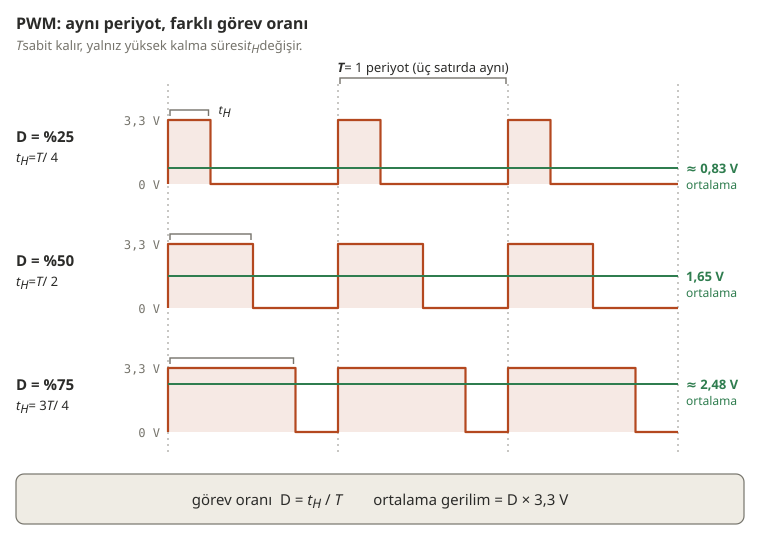
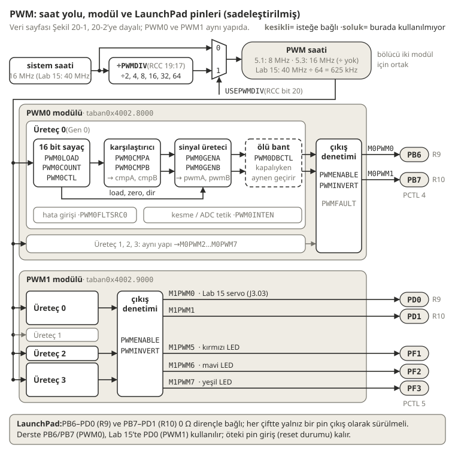
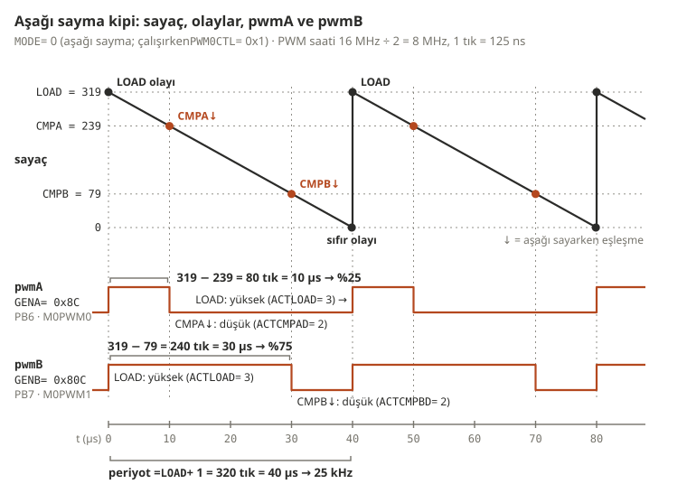
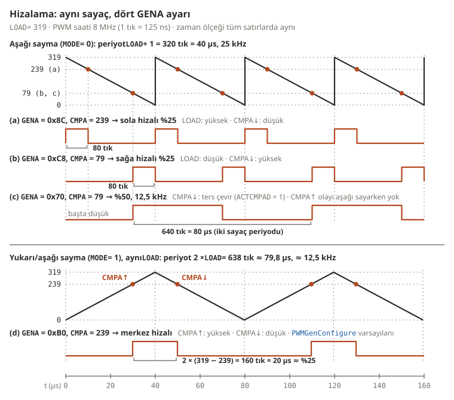
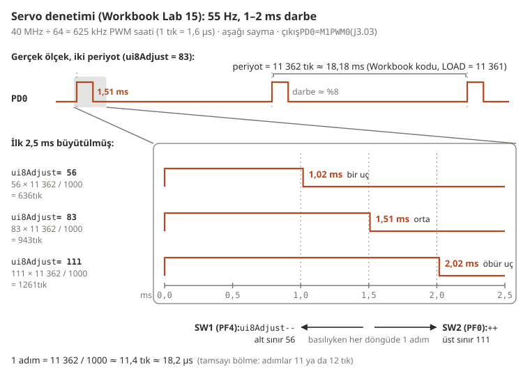

PWM (Darbe Genişlik Modülasyonu)
Bir LED'i yarı parlaklıkta yakmak, bir DC motoru yavaş döndürmek, bir servoyu ortaya getirmek: üçünde de mikrodenetleyici bir pini yalnız 0 ya da 1 yapabilir. Çözüm, pini çok hızlı açıp kapatmak ve açık kalma süresinin oranını ayarlamaktır. Buna darbe genişlik modülasyonu, PWM (Pulse Width Modulation) denir. Bu notta PWM'in temel büyüklüklerini, TM4C123GH6PM'nin iki PWM modülünü, üretecin sayaç-karşılaştırıcı-eylem yapısını ve 11 adımlı başlatmayı öğrenecek, LaunchPad'de PB6/PB7'de %25/%75 sinyal, RGB LED'de renk geçişi ve 55 Hz'lik bir servo sinyali üreteceğiz.
0. Amaç ve öğrenme kazanımları
Bu notun amacı, TM4C123GH6PM'nin PWM modülüyle istenen frekansta ve görev oranında sinyal üretmeyi, görev oranını çalışırken güvenle değiştirmeyi ve bunu hem register düzeyinde (API'siz) hem TivaWare ile (API'li) yapabilmektir. Bu notun sonunda öğrenci:
- Periyot, frekans, görev oranı, ortalama değer ve çözünürlüğü tanımlar, birbirinden hesaplar.
- TM4C123'ün 2 modül × 4 üreteç yapısını, GPTM'nin PWM kipinden farkını ve LaunchPad'deki PWM pinlerini (PB6/PB7, PD0/PD1, PF1–PF3) bilir, PCTL değerini seçer.
- PWM saatini RCC'nin USEPWMDIV/PWMDIV alanlarıyla ayarlar, modül saatini RCGCPWM ile açıp PRPWM ile bekler.
- Aşağı ve yukarı/aşağı sayma kiplerinde olayları, GENA/GENB eylem kodlarını çözer. Sola, sağa ve merkez hizalı sinyal kurar.
- LOAD ve CMPA/CMPB değerlerini frekans ve görev oranından hesaplar. %0, %100 ve CMPA ≥ LOAD gibi uç durumları doğru ele alır.
- Veri sayfası 20.4'ün 11 adımını 16 MHz'e uyarlayarak register düzeyinde ve TivaWare ile uygular.
- Workbook Lab 15'in servo sinyalini ek donanımsız gözlenebilir hâle getirir ve ders kodlarındaki hataları bulur.
1. PWM nedir?
Amaç: bir PWM sinyalini tanımlayan büyüklükleri ve kullanım alanlarını tanımak.
PWM sinyali, frekansı sabit bir kare dalgadır. Değişen tek şey her periyotta sinyalin yüksek kaldığı süredir. Veri sayfası PWM'i analog bir seviyeyi sayısal olarak kodlama tekniği diye tanımlar: yüksek çözünürlüklü sayaçlarla bir kare dalga üretilir ve görev oranı analog bilgiyi taşır (s. 1230).
- Periyot T: bir tam çevrimin süresi. Frekans f = 1/T.
- Yüksek süre (darbe genişliği) tH: bir periyotta çıkışın 1 olduğu süre.
- Görev oranı (duty cycle) D = tH / T, genellikle yüzde olarak verilir.
- Ortalama değer: 0 ile VH arasında gidip gelen bir sinyalin ortalaması D × VH'dir. 3,3 V'luk bir pinde %25 görev oranı ortalama 0,825 V demektir.

Ortalama değeri kullanan yük, hızlı değişimi kendisi süzer. LED'de göz süzer: frekans yeterince yüksekse titreşim görülmez, parlaklık görev oranıyla artar. DC motorda sargının endüktansı ve rotorun eylemsizliği süzer, hız ortalama gerilimle değişir. RC servo ise ortalamaya değil darbenin kendisine bakar: 50–60 Hz'lik bir sinyalde 1–2 ms'lik yüksek süre konumu belirler (Workbook s. 15-8, Bölüm 6). Veri sayfası ayrıca anahtarlamalı güç kaynaklarını ve motor denetimini sayar (s. 1230).
Frekans ve çözünürlük
Donanım PWM'i bir sayaçla üretilir. Sayacın bir periyotta attığı tık sayısı N, görev oranının kaç adımda ayarlanabileceğini, yani çözünürlüğü belirler:
N = f(PWM saati) / f(PWM) adım = 1 / N bit ≈ log2(N)
8 MHz / 25 kHz = 320 tık -> adım = %0,3125 -> yaklaşık 8,3 bitAynı PWM saatiyle frekans iki katına çıkarsa adım sayısı yarıya iner. TM4C123'te sayaç 16 bittir (s. 1230), N en çok 65 536 olabilir. Çok düşük frekanslar için PWM saati bölünür (Bölüm 2).
2. TM4C123GH6PM'de PWM modülü
Amaç: modülün yapısını, pinlerini ve saat yolunu veri sayfasından öğrenmek.
TM4C123GH6PM'de iki PWM modülü (PWM0 ve PWM1) vardır. Her modülde dört PWM üreteci (generator) ve bir denetim bloğu bulunur. Her üreteç aynı sayaçtan iki sinyal üretir: toplam 2 × 4 × 2 = 16 çıkış (s. 1230). Bir üretecin içinde (Şekil 20-2, s. 1232):
- 16 bitlik sayaç: aşağı ya da yukarı/aşağı sayar. Sıfırda ve LOAD değerinde birer olay üretir.
- İki karşılaştırıcı (A ve B): sayaç CMPA ya da CMPB'ye eşit olunca birer olay üretir.
- Sinyal üreteci: bu olaylara GENA ve GENB register'larında yazılı eylemleri uygular, pwmA ve pwmB'yi üretir.
- Ölü bant üreteci: istenirse pwmA'dan, aralarında boşluk olan tümleyen iki sinyal türetir. Kapalıyken sinyaller değişmeden geçer (s. 1236).
Denetim bloğu çıkışların pinlere verilip verilmeyeceğini (PWMENABLE), terslenmesini (PWMINVERT), hata durumunu ve üreteçlerin eşzamanlanmasını yönetir (s. 1231). Üreteç n'nin A çıkışı MnPWM(2n), B çıkışı MnPWM(2n+1) pinine gider: üreteç 0 → MnPWM0/1, üreteç 3 → MnPWM6/7 (s. 1266). Taban adresler PWM0 için 0x4002.8000, PWM1 için 0x4002.9000'dür. Üreteç n'nin register'ları 0x040 + n × 0x40 ofsetinden başlar (s. 1240).
Register adları. Veri sayfası üreteç register'larını PWMnLOAD, PWMnCMPA, PWMnGENA biçiminde adlandırır. Buradaki n üretecin numarasıdır, modülün değil: üreteç 0'ın register'ları PWM0LOAD, PWM0CTL, PWM0GENA'dır ve iki modülde de aynı adı taşır (s. 1266, s. 1278). inc/tm4c123gh6pm.h'deki makrolarda önce modül, sonra üreteç gelir: modül 0'ın üreteç 0'ı için PWM0LOAD = PWM0_0_LOAD_R (0x4002.8050), modül 1'in üreteç 2'si için PWM2LOAD = PWM1_2_LOAD_R. Modül düzeyindeki register'lar (PWMENABLE, PWMINVERT) için makro PWM0_ENABLE_R, PWM1_ENABLE_R biçimindedir. Bu not metinde veri sayfası adlarını (gerektiğinde kısaca LOAD, CMPA, GENA), kodda makroları kullanır.

GPTM'nin PWM kipinden farkı
Genel amaçlı zamanlayıcılar da PWM üretebilir (Zamanlayıcı notu, kipler). İkisi farklı işler için tasarlanmıştır:
| GPTM PWM kipi | PWM modülü | |
|---|---|---|
| Sayaç | 24 ya da 48 bit, yalnız aşağı sayma (s. 716) | 16 bit, aşağı ya da yukarı/aşağı (s. 1234) |
| Çıkış | Zamanlayıcı yarısı başına bir CCP pini | Üreteç başına aynı frekansta iki çıkış, modül başına 8 |
| Hizalama | Kenara hizalı | Sola, sağa, merkez hizalı |
| Motor sürmeye yönelik | Yok | Ölü bant, hata girişi, eşzamanlı güncelleme, ADC tetikleme (s. 1230–1231) |
Tek bir LED için ikisi de yeter. Yarım köprü, üç fazlı evirici ya da birbirine kilitli çok sayıda kanal gerektiğinde PWM modülü kullanılır.
LaunchPad'de PWM pinleri
PWM sinyalleri GPIO pinlerinin alternatif işlevleridir. Pin AFSEL ile çevre birimine verilir, PCTL'nin ilgili alanına tablodaki kod yazılır (Tablo 20-1 s. 1233, Tablo 23-5 s. 1351). Değerler TivaWare driverlib/pin_map.h'nin TM4C123GH6PM bölümüyle aynıdır (ör. GPIO_PB6_M0PWM0 = 0x00011804: Port B, bit ofseti 0x18, kod 4).
| Pin | Sinyal (PCTL) | Modül / üreteç / çıkış | LaunchPad'de |
|---|---|---|---|
| PB6 | M0PWM0 (4) | PWM0 / 0 / A | PD0'a R9 ile bağlı. Ders kodları |
| PB7 | M0PWM1 (4) | PWM0 / 0 / B | PD1'e R10 ile bağlı. Ders kodları |
| PD0 | M1PWM0 (5), M0PWM6 (4) | PWM1 / 0 / A | J3.03, Lab 15'in servo pini |
| PD1 | M1PWM1 (5), M0PWM7 (4) | PWM1 / 0 / B | J3.04 |
| PF1 | M1PWM5 (5) | PWM1 / 2 / B | RGB LED, kırmızı |
| PF2 | M1PWM6 (5) | PWM1 / 3 / A | RGB LED, mavi |
| PF3 | M1PWM7 (5) | PWM1 / 3 / B | RGB LED, yeşil |
| PF0 | M1PWM4 (5) | PWM1 / 2 / A | SW2. Kilitli pin, önce LOCK/CR |
LaunchPad'de PB6 ile PD0 R9, PB7 ile PD1 R10 üzerinden (0 Ω) birbirine bağlıdır (kullanıcı kılavuzu Tablo 2-5, s. 10). Kılavuz bunu bağlantı olarak verir. Buradan çıkan sonuç şudur: PB6/PB7'de PWM üretilirken PD0/PD1 çıkış yapılmamalıdır, yoksa iki çıkış aynı düğümü birbirine karşı sürer. Her çiftte (PB6/PD0, PB7/PD1) yalnız bir pin sürülmelidir. Reset'ten sonra PD0/PD1 sayısal girişi kapalı GPIO'dur, kendi hâline bırakılırsa sorun yoktur. Bu yüzden PB6'daki sinyal J3.03'te (PD0) de görülür. Tersi de geçerlidir: Lab 15'te PD0 sürülürken PB6 boş kalmalıdır.
RGB LED'in renkleri ve pinleri kullanıcı kılavuzu Tablo 2-2'dedir (s. 9). LED'ler PF1–PF3 üzerinden transistörlerle (Q1–Q3, şema s. 20) sürülür ve yüksek etkindir: görev oranı arttıkça LED parlar.
Saat: PWM bölücüsü ve saat geçidi
PWM saatinin kaynağı ya doğrudan sistem saati ya da bölünmüş sistem saatidir (§20.3.1, s. 1234). Seçim, RCC register'ındadır (0x400F.E060, s. 254–255):
| Alan | Bitler | Anlamı |
|---|---|---|
| USEPWMDIV | 20 | 0: PWM saati = sistem saati. 1: PWM saati = PWMDIV bölücüsünün çıkışı. Bölücü iki modül için ortaktır |
| PWMDIV | 19:17 | 0 → ÷2, 1 → ÷4, 2 → ÷8, 3 → ÷16, 4 → ÷32, 5, 6, 7 → ÷64. Reset değeri 7 |
RCC'nin reset değeri 0x078E.3AD1'dir: USEPWMDIV = 0, PWMDIV = 7 (s. 254). TivaWare'de SysCtlPWMClockSet(SYSCTL_PWMDIV_n) bu iki alanı tek yazmada değiştirir (sysctl.c, satır 3163). SYSCTL_PWMDIV_1 = 0'dır, yani USEPWMDIV = 0: bölme yoktur. SYSCTL_PWMDIV_2 = 0x0010.0000'dir (USEPWMDIV = 1, PWMDIV = 0). SYSCTL_PWMDIV_64 = 0x001A.0000'dir (sysctl.h, satır 207–213).
Modül saati. PWM modülleri açılmadan register'larına erişilirse veri yolu hatası (bus fault) oluşur (s. 354). İki yol vardır:
- RCGCPWM (
0x400F.E640, s. 354): bit 0 PWM0, bit 1 PWM1. Veri sayfası bu register'ın kullanılmasını ister. Hazır olmayı PRPWM (0x400F.EA40, s. 420) gösterir: bit, modül saatlenip reset'ten çıkınca 1 olur. - RCGC0 (
0x400F.E100, s. 456–457): eski yazılımlar için. Bit 20 (PWM0) yazılınca RCGCPWM.R0 da yazılır. RCGC0'da PWM1 için bit yoktur. PF1–PF3 ve PD0'daki M1 sinyalleri için RCGCPWM gerekir.
Saat açıldıktan sonra register'lara erişmeden önce en az 3 sistem saati çevrimi beklenmelidir (s. 1240, s. 456). Bunun en sağlam yolu PRPWM'deki bitin kendisini beklemektir. TivaWare'de karşılığı SysCtlPeripheralEnable(SYSCTL_PERIPH_PWM1) ve SysCtlPeripheralReady(SYSCTL_PERIPH_PWM1)'dir. Saat ve PLL için Sistem Saati ve PLL notu.
3. Üreteç nasıl çalışır?
Amaç: sayaçtan çıkış sinyaline giden yolu adım adım izleyip LOAD, CMPA ve GENA değerlerini hesaplayabilmek.
Sayaç kipleri ve olaylar
Sayacın kipi PWMnCTL'nin (üreteç 0 için PWM0CTL) MODE bitiyle (bit 1) seçilir (s. 1270):
- Aşağı sayma (MODE = 0): LOAD → 0, sonra yeniden LOAD. Sıfır olayının hemen ardından LOAD olayı gelir (§20.3.2, s. 1234). Bir periyot LOAD + 1 tıktır. Sola ya da sağa hizalı sinyaller için kullanılır.
- Yukarı/aşağı sayma (MODE = 1): 0 → LOAD → 0. Bir periyot 2 × LOAD tıktır. Merkez hizalı sinyaller için kullanılır.
Sayaç dört (yukarı/aşağıda altı) olay üretir, her biri bir tık (bir PWM saati çevrimi) genişliğinde bir darbedir (§20.3.3–20.3.4, s. 1234–1235):
- Sıfır olayı: sayaç 0. LOAD olayı: sayaç = LOAD.
- CMPA↓, CMPB↓: sayaç aşağı sayarken CMPA'ya / CMPB'ye eşit.
- CMPA↑, CMPB↑: yalnız yukarı/aşağı kipte, sayaç yukarı sayarken.
- Çakışma: bir karşılaştırma olayı sıfır ya da LOAD olayıyla aynı tıka düşerse sıfır/LOAD eylemi uygulanır, karşılaştırma eylemi yok sayılır. CMPA ve CMPB olayları çakışırsa pwmA'ya yalnız A, pwmB'ye yalnız B uygulanır.
- CMP > LOAD: karşılaştırıcı değeri LOAD'dan büyükse o karşılaştırıcı hiç olay üretmez.
Bu iki kural, %0 ve %100 durumlarını belirler.

GENA ve GENB: olaya eylem atamak
PWMnGENA (üreteç 0 için PWM0GENA) pwmA'yı, PWMnGENB pwmB'yi üretir. Her olay için 2 bitlik bir eylem alanı vardır (s. 1282–1287):
| Bitler | Alan | Olay |
|---|---|---|
| 1:0 | ACTZERO | sıfır olayı: sayaç = 0 |
| 3:2 | ACTLOAD | LOAD olayı: sayaç = LOAD |
| 5:4 | ACTCMPAU | CMPA↑: sayaç = CMPA, yukarı sayarken (yalnız MODE = 1) |
| 7:6 | ACTCMPAD | CMPA↓: sayaç = CMPA, aşağı sayarken |
| 9:8 | ACTCMPBU | CMPB↑: sayaç = CMPB, yukarı sayarken (yalnız MODE = 1) |
| 11:10 | ACTCMPBD | CMPB↓: sayaç = CMPB, aşağı sayarken |
Eylem kodu: 0 hiçbir şey yapma, 1 tersle, 2 düşüğe sür, 3 yükseğe sür. GENA'da CMPB olayları da kullanılabilir, yani pwmA'nın iki kenarını iki farklı karşılaştırıcı belirleyebilir. Veri sayfası örneğinin değerlerini bit bit çözelim:
GENA = 0x08C = 0000 1000 1100 ACTCMPAD (7:6) = 2 düşük, ACTLOAD (3:2) = 3 yüksek
GENB = 0x80C = 1000 0000 1100 ACTCMPBD (11:10) = 2 düşük, ACTLOAD (3:2) = 3 yüksekİkisinde de çıkış periyot başında (LOAD) yükselir, sayaç karşılaştırıcı değerine inince düşer. TivaWare'in PWMGenConfigure'ı aşağı sayma kipinde tam bu değerleri, yukarı/aşağı kipte ACTCMPAU_ONE | ACTCMPAD_ZERO = 0x0B0 ve GENB'de 0xB00 yazar (pwm.c, satır 232–254).
Frekans ve görev oranı formülleri
| Kip, GENA | Frekans | Görev oranı |
|---|---|---|
| Aşağı, 0x8C (sola hizalı) | fPWM / (LOAD + 1) | (LOAD − CMPA) / (LOAD + 1) |
| Aşağı, 0xC8 (sağa hizalı) | fPWM / (LOAD + 1) | (CMPA + 1) / (LOAD + 1) |
| Yukarı/aşağı, 0xB0 (merkez hizalı) | fPWM / (2 × LOAD) | (LOAD − CMPA) / LOAD |
fPWM PWM saatidir. Formüller üç ayarda da yalnız 1 ≤ CMPA ≤ LOAD − 1 için geçerlidir. CMPA = 0, CMPA = LOAD ve CMPA > LOAD formülün öngörmediği sonuç verir (aşağıda). Örnek (16 MHz, ÷2): fPWM = 8 MHz. 25 kHz için periyot 8 000 000 / 25 000 = 320 tık, LOAD = 319. %25 için yüksek süre 80 tık: CMPA = 319 − 80 = 239. %75 için CMPB = 319 − 240 = 79. Veri sayfasının 20 MHz örneğinde fPWM = 10 MHz, periyot 400 tık: LOAD = 0x18F (399), CMPA = 0x12B (299), CMPB = 0x63 (99) (s. 1239–1240). Formül iki örnekte de aynı sonucu verir.
Hizalama: darbe periyodun neresinde?
Aynı görev oranı farklı GENA değerleriyle periyodun başına, sonuna ya da ortasına konabilir. Tek bir LED için fark etmez. Birden çok kanal aynı anda anahtarlandığında (köprü sürme, akım ölçümünü kenarlardan uzağa koyma) önemlidir. Veri sayfası aşağı saymayı sola/sağa, yukarı/aşağıyı merkez hizalı sinyaller için önerir (s. 1234).
| GENA | Kip | Eylemler | Sonuç (LOAD = 319) |
|---|---|---|---|
| 0x08C | Aşağı | LOAD olayında yüksek, CMPA↓ düşük | Sola hizalı. CMPA = 239 → %25 |
| 0x0C8 | Aşağı | LOAD olayında düşük, CMPA↓ yüksek | Sağa hizalı. CMPA = 79 → 80 tık, %25 |
| 0x070 | Aşağı | CMPA↑ yüksek (aşağı saymada hiç olmaz), CMPA↓ tersle | Her periyotta bir tersleme: %50, 12,5 kHz. CMPA yalnız fazı kaydırır |
| 0x0B0 | Yukarı/aşağı | CMPA↑ yüksek, CMPA↓ düşük | Merkez hizalı. CMPA = 239 → 2 × 80 = 160 tık / 638 tık ≈ %25, ≈ 12,5 kHz |

Aynı LOAD ile yukarı/aşağı kipte frekans yarıya iner (Şekil 4'te ≈ 12,5 kHz). 25 kHz için LOAD = 160 alınır ve görev oranı 1/160'lık adımlarla değişir. Merkez hizalamanın bedeli çözünürlüğün yarıya inmesidir.
Uç durumlar: %0 ve %100
0x8C ile LOAD = 319'da CMPA'nın uç değerleri iki kurala göre şöyle davranır (s. 1235, s. 1280, s. 1282):
| CMPA | Ne olur? | Görev oranı |
|---|---|---|
| 320 ve üstü (> LOAD) | CMPA↓ olayı hiç yok. LOAD'da yükselen çıkışı düşüren olmaz | %100 |
| 319 (= LOAD) | CMPA↓, LOAD olayıyla çakışır. LOAD eylemi (yüksek) kazanır | %100 |
| 1 … 318 | Normal: yüksek süre 319 − CMPA tık | %99,4 … %0,3 |
| 0 | CMPA↓, sıfır olayıyla çakışır. ACTZERO = 0 (hiçbir şey) uygulanır, düşürme yok sayılır | %100 |
Sonuç: 0x8C ile CMPA yazarak %0 elde edilemez. En düşük görev oranı CMPA = 318'deki 1 tıktır. %0 için çıkış PWMENABLE'da kapatılır: kapalı çıkışın yerine 0 değeri geçer (s. 1247). Ya da GENA geçici olarak değiştirilir (ör. ACTLOAD = 2). %100 için CMPA > LOAD yazmak açık bir yoldur. Aynı tuzak TivaWare'de de vardır: PWMPulseWidthSet(…, 0) CMP = LOAD yazar ve çıkış %100 olur. 5.2 ve 5.3 bunu ele alır.
Öteki ayarlarda aynı iki kural farklı sonuç verir (s. 1235, s. 1282):
- Sağa hizalı (0xC8): durum tersine döner. CMPA = 0 (sıfır olayıyla çakışır, ACTZERO = 0), CMPA = LOAD (LOAD olayı düşük sürer) ve CMPA > LOAD (olay yok) çıkışı hiç yükseltmez: %0. En uzun darbe CMPA = LOAD − 1'deki 319 tıktır (%99,7). Bu ayarla %100 elde edilemez.
- Yukarı/aşağı, merkez hizalı (0xB0): CMPA = 0 ya da CMPA = LOAD iken hem CMPA↑ hem CMPA↓ sıfır/LOAD olayıyla çakışıp yok sayılır. CMPA > LOAD'da hiç olay yoktur. ACTZERO ve ACTLOAD = 0 olduğundan çıkış son düzeyinde kalır: önceki değer ne bıraktıysa %0 ya da %100. TivaWare yukarı/aşağı kipte
PWMPulseWidthSet(…, 0)ile CMP = LOAD yazar ve tam bu duruma düşer.
Çalışırken değer güncelleme
PWMnCTL'deki güncelleme bitleri, yeni yazılan bir değerin ne zaman etkili olacağını seçer (s. 1267–1269, §20.3.7 s. 1237):
- LOAD, CMPA, CMPB (LOADUPD, CMPAUPD, CMPBUPD = bit 3, 4, 5): 0 → yerel eşzamanlı: yeni değer sayaç bir sonraki kez 0'a ulaşınca kullanılır. 1 → küresel eşzamanlı: PWMCTL üzerinden eşzamanlı güncelleme istenene kadar bekler. Bu üç register'ın "hemen" seçeneği yoktur.
- GENA, GENB ve ölü bant register'ları (GENAUPD, GENBUPD …): 0 → hemen, 2 → yerel, 3 → küresel.
Veri sayfasının 20.4 örneği 6. adımda "immediate updates" der ve PWM0CTL'ye 0 yazar (s. 1239). Bu ifade GENA/GENB için doğrudur. LOAD ve CMPA/CMPB için 0 yerel eşzamanlı demektir. TivaWare'deki PWM_GEN_MODE_NO_SYNC (= 0) sabitinin "Immediate updates" yorumu da aynı şekilde gevşektir (pwm.h, satır 63). Yerel eşzamanlama işe yarar: CMPA periyodun ortasında değiştirilse bile o periyot eski değerle biter, aşırı kısa ya da uzun darbe çıkmaz (s. 1237). Güncelleme gerçekleşmeden register yeniden yazılırsa önceki değer hiç kullanılmaz; yalnız son yazılan değer alınır (s. 1280).
Çıkış denetimi ve diğer özellikler
- PWMENABLE (ofset 0x008, s. 1247): bit k, MnPWMk'yi pine verir. 0 iken pine 0 değeri gider, üreteç çalışmaya devam eder.
- PWMINVERT (0x00C, s. 1249): bit k çıkışı tersler. Kapalı çıkışlar da terslenir, kapalı bir çıkış böylece 1 verebilir.
- Ölü bant (PWMnDBCTL, s. 1236): açıksa pwmB kaybolur, pwmA'dan yükselen kenarı geciktirilmiş pwmA' ve terslenip geciktirilmiş pwmB' üretilir. Yarım köprüde iki anahtarın aynı anda iletime girmesini önler.
- Hata girişi (MnFAULTn, s. 1238): dış bir hata sinyali çıkışları güvenli değere çeker.
- Kesme ve ADC tetikleme (PWMnINTEN, s. 1236–1237): aynı olaylar kesme ya da ADC örnekleme tetiği üretebilir.
- Eşzamanlama (PWMSYNC, s. 1237): birden çok üretecin sayacını tek yazmayla sıfırlar.
- Hata ayıklama (PWMnCTL.DEBUG, bit 2): 0 iken işlemci kesme noktasında durunca sayaç bir sonraki sıfırda durur (s. 1270).
- ENABLE = 0 sayacı (PWMnCOUNT) sıfırlamaz. Temiz bir yeniden başlatma için modül SRPWM ile reset edilir (s. 1270, s. 1279, s. 330).
4. Başlatma adımları
Amaç: veri sayfası 20.4'ün adımlarını LaunchPad'in reset sonrasındaki 16 MHz saatine uyarlamak.
Veri sayfası 20.4 (s. 1239–1240), üreteç 0'da 25 kHz, MnPWM0'da %25 ve MnPWM1'de %75 için 11 adım verir ve 20 MHz sistem saati varsayar. Ders kodları ve bu notun API'siz örnekleri aynı adımları 16 MHz PIOSC ile uygular: PWM saati 8 MHz, periyot 320 tık. Tablo ve kod yorumları aynı numaraları kullanır.
| Adım | İş | Veri sayfası (20 MHz) | Bu not (16 MHz, PB6/PB7) | TivaWare |
|---|---|---|---|---|
| 1 | PWM modül saati | RCGC0 = 0x0010.0000 | RCGCPWM.R0 = 1, PRPWM.R0 beklenir | SysCtlPeripheralEnable(SYSCTL_PERIPH_PWM0) |
| 2 | GPIO port saati | RCGC2 | RCGCGPIO.R1 = 1, PRGPIO.R1 beklenir | SysCtlPeripheralEnable(SYSCTL_PERIPH_GPIOB) |
| 3 | Alternatif işlev | GPIOAFSEL | AFSEL |= 0xC0, DEN |= 0xC0 (DEN 20.4'te yok ama gerekir) | GPIOPinTypePWM(GPIO_PORTB_BASE, GPIO_PIN_6 | GPIO_PIN_7) |
| 4 | Pin çoklayıcı | GPIOPCTL | PMC6 = PMC7 = 4 → 0x4400.0000 | GPIOPinConfigure(GPIO_PB6_M0PWM0), (GPIO_PB7_M0PWM1) |
| 5 | PWM saati | USEPWMDIV = 1, PWMDIV = 0 (÷2): 10 MHz | Aynı: 8 MHz | SysCtlPWMClockSet(SYSCTL_PWMDIV_2) |
| 6 | Üreteç kipi ve eylemler | CTL = 0, GENA = 0x8C, GENB = 0x80C | Aynı | PWMGenConfigure(PWM0_BASE, PWM_GEN_0, PWM_GEN_MODE_DOWN | PWM_GEN_MODE_NO_SYNC) |
| 7 | Periyot | LOAD = 0x18F (400 − 1) | LOAD = 319 (320 − 1) | PWMGenPeriodSet(PWM0_BASE, PWM_GEN_0, 320) |
| 8 | A darbesi, %25 | CMPA = 0x12B (299) | CMPA = 239 | PWMPulseWidthSet(PWM0_BASE, PWM_OUT_0, 80) |
| 9 | B darbesi, %75 | CMPB = 0x63 (99) | CMPB = 79 | PWMPulseWidthSet(PWM0_BASE, PWM_OUT_1, 240) |
| 10 | Sayacı başlat | CTL = 1 | CTL = 1 (ENABLE) | PWMGenEnable(PWM0_BASE, PWM_GEN_0) |
| 11 | Çıkışları aç | ENABLE = 0x3 | ENABLE = 0x3 | PWMOutputState(PWM0_BASE, PWM_OUT_0_BIT | PWM_OUT_1_BIT, true) |
Veri sayfası 1. ve 2. adımda eski RCGC0/RCGC2 register'larını anar. Bu not yeni RCGCPWM/RCGCGPIO ile PR register'larını kullanır (Bölüm 2). GPIODIR ayarlanmaz: AFSEL = 1 olan pinin yönünü çevre birimi belirler. PB6/PB7'nin analog işlevi olmadığı için AMSEL de gerekmez (kullanıcı kılavuzu Tablo 2-4/2-5).
TivaWare fonksiyonlarının register karşılığı
| Fonksiyon | Yaptığı (TivaWare 2.1.4) |
|---|---|
SysCtlPWMClockSet(cfg) | RCC'de USEPWMDIV ve PWMDIV'i temizler, cfg'yi yazar (sysctl.c, satır 3163) |
GPIOPinTypePWM(port, pinler) | Yön donanımda (AFSEL = 1), 2 mA standart pad, DEN = 1 (gpio.c, satır 1932–1948). Kilitli PF0'ı açmaz |
PWMGenConfigure(base, gen, cfg) | CTL'nin kip ve güncelleme alanlarını cfg ile değiştirir. Aşağı saymada GENA = 0x8C, GENB = 0x80C, yukarı/aşağıda 0xB0, 0xB00 yazar (pwm.c, satır 200–255) |
PWMGenPeriodSet(base, gen, p) | Aşağı saymada LOAD = p − 1, yukarı/aşağıda LOAD = p / 2 (satır 302, 311). Yani periyot tık olarak verilir, −1'i fonksiyon yapar |
PWMPulseWidthSet(base, çıkış, g) | Yukarı/aşağıda g'yi ikiye böler. ASSERT(g < LOAD), sonra CMP = LOAD − g. Çift çıkış CMPA'ya, tek çıkış CMPB'ye (satır 447–497) |
PWMGenEnable, PWMOutputState | CTL |= ENABLE (satır 394). ENABLE register'ında bitleri kurar ya da siler (satır 726–749) |
ASSERT'ler yalnız DEBUG tanımlıyken derlenir. TivaWare 2.1.4'ün hazır kütüphanelerinde (ccs/Debug/driverlib.lib dahil) __error__ başvurusu yoktur, yani ASSERT derlenmemiştir. Ders projelerinin bağladığı 2.2.0.295 driverlib.lib'de de denetim büyük olasılıkla yoktur: sınır dışı bir genişlik sessizce yanlış bir CMP değerine dönüşür (Bölüm 7).
5. Örnekler
Örnekler TivaWare 2.1.4 başlıklarıyla clang -Wall altında uyarısız derlenir. 5.1 ve 5.2 yalnız inc/tm4c123gh6pm.h kullanır. PB6/PB7'de LED yoktur: sinyali görmek için osiloskop, mantık analizörü ya da bir direnç (ör. 330 Ω) üzerinden bağlanmış bir LED gerekir. Kartta ek donanımsız deneme için 5.3 ve Bölüm 6.
5.1 PB6 %25, PB7 %75, 25 kHz API'siz
Amaç: veri sayfası 20.4'ü 16 MHz'te, yeni saat geçidi register'ları ve maskeli yazmalarla uygulamak.
// PWM0 üreteç 0: PB6 (M0PWM0) %25, PB7 (M0PWM1) %75, 25 kHz.
// Sistem saati: reset sonrası PIOSC, 16 MHz. PWM saati 16 / 2 = 8 MHz.
// Adım numaraları veri sayfası 20.4 (s. 1239–1240) ile aynıdır.
#include <stdint.h>
#include "inc/tm4c123gh6pm.h"
#define PWM_LOAD 319u // 8 MHz / 25 kHz = 320 tık; aşağı saymada LOAD = 320 - 1
#define PWM_CMPA 239u // PB6: LOAD'dan CMPA'ya 319 - 239 = 80 tık yüksek -> %25
#define PWM_CMPB 79u // PB7: 319 - 79 = 240 tık yüksek -> %75
int main(void)
{
// 1. PWM0 modülünün saati (eski yol: SYSCTL_RCGC0_R |= 0x00100000)
SYSCTL_RCGCPWM_R |= SYSCTL_RCGCPWM_R0;
while ((SYSCTL_PRPWM_R & SYSCTL_PRPWM_R0) == 0) { } // yalnız R0'a bak
// 2. Port B'nin saati (eski yol: RCGC2)
SYSCTL_RCGCGPIO_R |= SYSCTL_RCGCGPIO_R1;
while ((SYSCTL_PRGPIO_R & SYSCTL_PRGPIO_R1) == 0) { }
// 3. PB6 ve PB7 alternatif işleve; Port B'nin diğer bitleri korunur
GPIO_PORTB_AFSEL_R |= 0xC0;
GPIO_PORTB_DEN_R |= 0xC0;
// 4. PCTL: PMC6 = PMC7 = 4 (M0PWM0, M0PWM1); önce alanları temizle
GPIO_PORTB_PCTL_R = (GPIO_PORTB_PCTL_R & ~0xFF000000u) | 0x44000000u;
// 5. PWM saati = sistem saati / 2: USEPWMDIV = 1, PWMDIV = 0, tek yazmada
SYSCTL_RCC_R = (SYSCTL_RCC_R & ~SYSCTL_RCC_PWMDIV_M)
| SYSCTL_RCC_USEPWMDIV | SYSCTL_RCC_PWMDIV_2;
// 6. Üreteç 0 durdurulur: aşağı sayma, LOAD/CMP yerel eşzamanlı
PWM0_0_CTL_R = 0;
PWM0_0_GENA_R = 0x08C; // ACTLOAD = 3 (yüksek), ACTCMPAD = 2 (düşük)
PWM0_0_GENB_R = 0x80C; // ACTLOAD = 3 (yüksek), ACTCMPBD = 2 (düşük)
// 7. Periyot
PWM0_0_LOAD_R = PWM_LOAD;
// 8. ve 9. Darbe genişlikleri
PWM0_0_CMPA_R = PWM_CMPA;
PWM0_0_CMPB_R = PWM_CMPB;
// 10. Sayacı başlat
PWM0_0_CTL_R = PWM_0_CTL_ENABLE;
// 11. pwmA' ve pwmB' pinlere: bit 0 = M0PWM0 (PB6), bit 1 = M0PWM1 (PB7)
PWM0_ENABLE_R = 0x03;
while (1) { } // PWM donanımda üretilir, işlemci boşta
}Kodun ayrıntıları:
- PRPWM'de yalnız R0 biti denetlenir. Register'ın tamamını 1 ile karşılaştırmak PWM1 de açıkken takılır (Bölüm 7).
- AFSEL ve DEN
|=ile, PCTL maske + değer ile yazılır: Port B'nin başka pinleri (ör. I2C0'ın PB2/PB3'ü) bozulmaz. - RCC tek yazmada değişir. Ders kodlarındaki iki ayrı yazmada arada kısa bir süre ÷64 seçili kalır (Bölüm 7).
Beklenen davranış: osiloskopta PB6'da 40 µs periyotlu, 10 µs yüksek bir sinyal, PB7'de aynı periyotta 30 µs yüksek bir sinyal görülür. İki sinyalin yükselen kenarları çakışır (ikisi de LOAD'da yükselir, Şekil 3). R9/R10 nedeniyle aynı sinyaller J3.03/J3.04'te (PD0/PD1) de görülür.
5.2 Görev oranını %0–%100 taramak API'siz
Amaç: görev oranını çalışırken değiştirmek ve uç durumları veri sayfasının kurallarına göre doğru üretmek.
// PB6 (M0PWM0) görev oranını %0 -> %100 -> %0 tarar, 25 kHz.
// 16 MHz PIOSC, PWM saati 8 MHz, periyot 320 tık (LOAD = 319), GENA = 0x8C.
#include <stdint.h>
#include "inc/tm4c123gh6pm.h"
#define PERIYOT 320u // tık
#define LOAD (PERIYOT - 1u) // 319
// SysTick ile ms bekleme (16 MHz, yoklamalı; SysTick notundaki yöntem)
static void bekle_ms(uint32_t ms)
{
NVIC_ST_RELOAD_R = 16000u - 1u; // 1 ms
NVIC_ST_CURRENT_R = 0;
NVIC_ST_CTRL_R = 0x05; // ENABLE = 1, CLK_SRC = sistem saati
while (ms--) {
while ((NVIC_ST_CTRL_R & 0x10000u) == 0) { } // COUNT bayrağı
}
NVIC_ST_CTRL_R = 0;
}
// Görev oranını yüzde olarak ayarlar (0..100)
static void pwm_yuzde(uint32_t yuzde)
{
uint32_t yuksek = (yuzde * PERIYOT) / 100u; // yüksek kalınacak tık
if (yuksek == 0u) { // %0: CMPA ile elde edilemez
PWM0_ENABLE_R &= ~0x01u; // çıkış kapalı -> pin 0 (s. 1247)
return;
}
if (yuksek >= LOAD) { // 319 ya da 320 tık
PWM0_0_CMPA_R = PERIYOT; // CMPA > LOAD: olay yok -> hep yüksek
} else {
PWM0_0_CMPA_R = LOAD - yuksek; // 1..318: yüksek süre = LOAD - CMPA
}
PWM0_ENABLE_R |= 0x01u;
}
int main(void)
{
uint32_t y;
SYSCTL_RCGCPWM_R |= SYSCTL_RCGCPWM_R0; // 1
while ((SYSCTL_PRPWM_R & SYSCTL_PRPWM_R0) == 0) { }
SYSCTL_RCGCGPIO_R |= SYSCTL_RCGCGPIO_R1; // 2
while ((SYSCTL_PRGPIO_R & SYSCTL_PRGPIO_R1) == 0) { }
GPIO_PORTB_AFSEL_R |= 0x40; // 3: yalnız PB6
GPIO_PORTB_DEN_R |= 0x40;
GPIO_PORTB_PCTL_R = (GPIO_PORTB_PCTL_R & ~0x0F000000u) | 0x04000000u; // 4
SYSCTL_RCC_R = (SYSCTL_RCC_R & ~SYSCTL_RCC_PWMDIV_M) // 5: /2
| SYSCTL_RCC_USEPWMDIV | SYSCTL_RCC_PWMDIV_2;
PWM0_0_CTL_R = 0; // 6
PWM0_0_GENA_R = 0x08C;
PWM0_0_LOAD_R = LOAD; // 7
pwm_yuzde(0); // 8: %0 ile başla
PWM0_0_CTL_R = PWM_0_CTL_ENABLE; // 10
while (1) {
for (y = 0; y <= 100u; y++) { pwm_yuzde(y); bekle_ms(20); } // ~2 s artış
for (y = 100; y > 0u; y--) { pwm_yuzde(y); bekle_ms(20); } // ~2 s azalış
}
}Nasıl çalışır? pwm_yuzde istenen yüzdeyi yüksek tık sayısına çevirir. 1–318 tık için CMPA = 319 − tık yazılır. 319 ve 320 tık için CMPA = 320 (> LOAD) yazılır. (CMPA = 0 da %100 verirdi; formülün öngördüğü 319/320 değil.) %0 için çıkış PWMENABLE'dan kapatılır. CMPA yerel eşzamanlı güncellendiği için yeni değer bir sonraki sıfırda, yani en geç 40 µs sonra etkili olur. Periyot ortasında yazmak bozuk darbe üretmez. Tek istisna ilk açılıştır: etkin CMP reset değeri 0'dır ve ilk yazılan değer bir sonraki sıfırda alınır, bu yüzden en çok bir periyot %100 çıkabilir. Bu süre gözle fark edilmez. Bekleme SysTick ile yapılır (SysTick notu): döngü sayan bir gecikmenin süresi derleyiciye bağlıdır.
Beklenen davranış: PB6'ya bağlı LED yaklaşık 2 s'de sönükten tam parlaklığa çıkar, 2 s'de söner. Göz parlaklığı doğrusal algılamadığı için değişim düşük görev oranlarında daha belirgindir.
5.3 RGB LED'de renk geçişi API'li
Amaç: TivaWare ile PWM1'in iki üretecini kurup kartın RGB LED'inin üç rengini ayrı ayrı sürmek.
// LaunchPad RGB LED'i PWM ile: PF1 kırmızı (M1PWM5), PF3 yeşil (M1PWM7),
// PF2 mavi (M1PWM6). 16 MHz, PWM saati 16 MHz, 1 kHz. TivaWare ile.
#include <stdint.h>
#include <stdbool.h>
#include "inc/hw_memmap.h"
#include "driverlib/sysctl.h"
#include "driverlib/gpio.h"
#include "driverlib/pin_map.h"
#include "driverlib/pwm.h"
#define PERIYOT 16000u // 16 MHz / 1 kHz; PWMGenPeriodSet LOAD = 15 999 yazar
// Kanal sırası: kırmızı, yeşil, mavi
static const uint32_t cikis[3] = { PWM_OUT_5, PWM_OUT_7, PWM_OUT_6 };
static const uint32_t cbit[3] = { PWM_OUT_5_BIT, PWM_OUT_7_BIT, PWM_OUT_6_BIT };
// Parlaklık binde olarak (0..1000)
static void kanal_ayarla(uint32_t k, uint32_t binde)
{
uint32_t genislik = (PERIYOT * binde) / 1000u; // yüksek tık sayısı
if (genislik == 0u) {
// Genişlik 0 verilseydi CMP = LOAD olurdu: LOAD olayı kazanır, LED tam yanar.
PWMOutputState(PWM1_BASE, cbit[k], false); // %0: çıkış kapalı
return;
}
if (genislik > PERIYOT - 2u) {
genislik = PERIYOT - 2u; // ASSERT(genislik < LOAD) sınırı: en çok %99,99
}
PWMPulseWidthSet(PWM1_BASE, cikis[k], genislik); // CMP = LOAD - genislik
PWMOutputState(PWM1_BASE, cbit[k], true);
}
int main(void)
{
uint32_t k, b;
SysCtlClockSet(SYSCTL_SYSDIV_1 | SYSCTL_USE_OSC | SYSCTL_OSC_MAIN |
SYSCTL_XTAL_16MHZ); // 16 MHz kristal, PLL yok
SysCtlPWMClockSet(SYSCTL_PWMDIV_1); // USEPWMDIV = 0: PWM saati = 16 MHz
SysCtlPeripheralEnable(SYSCTL_PERIPH_PWM1);
SysCtlPeripheralEnable(SYSCTL_PERIPH_GPIOF);
while (!SysCtlPeripheralReady(SYSCTL_PERIPH_PWM1) ||
!SysCtlPeripheralReady(SYSCTL_PERIPH_GPIOF)) { }
GPIOPinConfigure(GPIO_PF1_M1PWM5); // PCTL = 5
GPIOPinConfigure(GPIO_PF2_M1PWM6);
GPIOPinConfigure(GPIO_PF3_M1PWM7);
GPIOPinTypePWM(GPIO_PORTF_BASE, GPIO_PIN_1 | GPIO_PIN_2 | GPIO_PIN_3);
// Üreteç 2: M1PWM4/5, üreteç 3: M1PWM6/7. GENA = 0x8C, GENB = 0x80C yazılır.
PWMGenConfigure(PWM1_BASE, PWM_GEN_2, PWM_GEN_MODE_DOWN | PWM_GEN_MODE_NO_SYNC);
PWMGenConfigure(PWM1_BASE, PWM_GEN_3, PWM_GEN_MODE_DOWN | PWM_GEN_MODE_NO_SYNC);
PWMGenPeriodSet(PWM1_BASE, PWM_GEN_2, PERIYOT);
PWMGenPeriodSet(PWM1_BASE, PWM_GEN_3, PERIYOT);
kanal_ayarla(0, 1000); // kırmızıdan başla
kanal_ayarla(1, 0);
kanal_ayarla(2, 0);
PWMGenEnable(PWM1_BASE, PWM_GEN_2);
PWMGenEnable(PWM1_BASE, PWM_GEN_3);
while (1) {
// Renk çemberi: kırmızı -> yeşil -> mavi -> kırmızı, her geçiş 1 s
for (k = 0; k < 3u; k++) {
for (b = 0; b <= 1000u; b += 10u) {
kanal_ayarla(k, 1000u - b); // bu kanal söner
kanal_ayarla((k + 1u) % 3u, b); // sonraki kanal yanar
SysCtlDelay(16000000u / 3u / 100u); // ~10 ms (3 çevrim/döngü)
}
}
}
}Kodun ayrıntıları:
- Kırmızı (M1PWM5) üreteç 2'nin B çıkışı, mavi ve yeşil (M1PWM6/7) üreteç 3'ün A ve B çıkışıdır. Bu yüzden iki üreteç kurulur. Üreteç 2'nin A çıkışı (M1PWM4, PF0) açılmaz.
PWMGenPeriodSet(…, 16000)LOAD = 15 999 yazar: 16 MHz / 16 000 = 1 kHz.PWMPulseWidthSetCMP = LOAD − genişlik yazar ve genişliğin LOAD'dan küçük olmasını ister. Genişlik 0 olursa CMP = LOAD olur ve LED tam yanar (Bölüm 3).kanal_ayarla0'da çıkışı kapatır, üst sınırı 15 998'e (%99,99) kırpar. 5.2'deki gibi, açılışta etkin CMP reset değeri 0 olduğundan ilk periyot (1 ms) %100 çıkabilir, etkisi görülmez.
Beklenen davranış: LED kırmızıdan sarı üzerinden yeşile, camgöbeği üzerinden maviye, mor üzerinden yeniden kırmızıya her geçiş yaklaşık 1 s sürecek biçimde döner.
6. TI Workbook Lab 15 uyarlaması TI Lab 15
Amaç: Lab 15'in servo sinyalini hesaplarıyla incelemek ve LaunchPad'de servosuz gözlenebilir bir uyarlamasını çalıştırmak.
Lab 15, bir RC servoyu PD0'dan (M1PWM0) sürer (Workbook s. 15-7 – 15-17). Servo 50–60 Hz'lik bir sinyal bekler. 1 ms ve 2 ms'lik darbeler hareket sınırları, 1,5 ms orta konumdur (s. 15-8). Lab'ın hesabı:
| Büyüklük | Lab 15'te | Sonuç |
|---|---|---|
| Sistem saati | SYSCTL_SYSDIV_5 | SYSCTL_USE_PLL | 40 MHz |
| PWM saati | SysCtlPWMClockSet(SYSCTL_PWMDIV_64) | 40 MHz / 64 = 625 kHz (1,6 µs/tık) |
| Periyot | ui32Load = 625 000 / 55 − 1 | 11 362. PWMGenPeriodSet LOAD = 11 361 yazar |
| Darbe | ui8Adjust * ui32Load / 1000 | 56 → 636 tık ≈ 1,02 ms; 83 → 943 ≈ 1,51 ms; 111 → 1261 ≈ 2,02 ms |
| Düğmeler | SW1 (PF4) azaltır, SW2 (PF0) artırır | Her döngüde ±1, döngü SysCtlDelay(100000) |

- Periyot bir tık kısa:
ui32Load'a −1 zaten uygulanmıştır,PWMGenPeriodSetbir kez daha 1 çıkarır (pwm.c, satır 311). Periyot 11 363 yerine 11 362 tık olur: 18,179 ms, 55,008 Hz. Fark 1,6 µs'dir, servonun 50–60 Hz aralığı yanında önemsizdir. Ama TivaWare'e periyodun kendisinin verildiğini gösteren iyi bir örnektir. - "Asenkron" yükleme değil: Workbook 19. adımda darbe genişliğinin çıkıştan bağımsız, asenkron yüklendiğini söyler (s. 15-16).
PWM_GEN_MODE_DOWNile CMPAUPD = 0'dır. Yani CMPA yerel eşzamanlıdır: yeni değer bir sonraki sıfırda alınır (s. 1269), periyot ortasında darbe bozulmaz. - Çözünürlük 18,2 µs: Workbook periyodun binde birini "1.82µS" diye yazar (s. 15-14). 18,2 ms / 1000 = 18,2 µs'dir. Lab'ın kendi sonucu (83 × 18,2 µs ≈ 1,51 ms) da bunu doğrular.
Donanım. Lab servoyu J3'ün 1–3. pinlerine takar: J3.01 = 5 V, J3.02 = toprak, J3.03 = PD0 (s. 15-9 – 15-10, kullanıcı kılavuzu Tablo 2-5). Servo USB'nin 5 V'unu kullanır. Servonun ani akımları USB beslemesini zorlayabilir. Ayrı bir 5 V kaynak ve ortak toprak daha güvenlidir. PD0, PB6'ya R9 ile bağlı olduğu için PB6 bu sırada boş kalmalıdır.
Uyarlama seçimi. Servo ya da mantık analizörü olmadan Lab'ın sinyali görülemez. Uyarlama aynı hesabı iki üretece uygular: PD0'daki M1PWM0 Lab'daki gibi kalır (servo ya da analizör takılabilir), aynı sinyal M1PWM5 ile PF1'deki kırmızı LED'e de verilir. Böylece kartta ek donanım olmadan SW1/SW2 ile parlaklığın değiştiği görülür. Darbe periyodun %5,6–%11,1'i olduğu için LED sönük yanar ve 55 Hz'te belirgin biçimde titreşebilir. Bu, servo sinyalinin bir parlaklık sinyali olmadığını da gösterir. Lab'dan farklar: ROM_ çağrıları yerine driverlib çağrıları, periyot −1'siz verilir, modüller SysCtlPeripheralReady ile beklenir.
// TI Workbook Lab 15 uyarlaması: servo sinyali (55 Hz, 1,0–2,0 ms darbe)
// PD0 (M1PWM0) ve aynısı PF1 (M1PWM5, kırmızı LED). SW1 kısaltır, SW2 uzatır.
// 40 MHz (PLL), PWM saati 40 MHz / 64 = 625 kHz.
#include <stdint.h>
#include <stdbool.h>
#include "inc/hw_memmap.h"
#include "inc/hw_types.h"
#include "inc/hw_gpio.h"
#include "driverlib/sysctl.h"
#include "driverlib/gpio.h"
#include "driverlib/pin_map.h"
#include "driverlib/pwm.h"
#define PWM_FREKANS 55u
static void genislik_yaz(uint32_t g)
{
PWMPulseWidthSet(PWM1_BASE, PWM_OUT_0, g); // PD0: CMPA = LOAD - g
PWMPulseWidthSet(PWM1_BASE, PWM_OUT_5, g); // PF1: CMPB = LOAD - g
}
int main(void)
{
uint32_t periyot;
uint32_t ayar = 83u; // 83 / 1000 periyot ~ 1,51 ms: orta konum
SysCtlClockSet(SYSCTL_SYSDIV_5 | SYSCTL_USE_PLL | SYSCTL_OSC_MAIN |
SYSCTL_XTAL_16MHZ); // 40 MHz
SysCtlPWMClockSet(SYSCTL_PWMDIV_64); // 625 kHz
SysCtlPeripheralEnable(SYSCTL_PERIPH_PWM1);
SysCtlPeripheralEnable(SYSCTL_PERIPH_GPIOD);
SysCtlPeripheralEnable(SYSCTL_PERIPH_GPIOF);
while (!SysCtlPeripheralReady(SYSCTL_PERIPH_PWM1) ||
!SysCtlPeripheralReady(SYSCTL_PERIPH_GPIOD) ||
!SysCtlPeripheralReady(SYSCTL_PERIPH_GPIOF)) { }
// PD0, PB6'ya R9 ile bağlı: PB6 bu programda giriş (reset) kalır.
GPIOPinConfigure(GPIO_PD0_M1PWM0);
GPIOPinConfigure(GPIO_PF1_M1PWM5);
GPIOPinTypePWM(GPIO_PORTD_BASE, GPIO_PIN_0);
GPIOPinTypePWM(GPIO_PORTF_BASE, GPIO_PIN_1);
// SW2 = PF0 kilitlidir: LOCK/CR ile aç, sonra SW1/SW2 girişleri çekme dirençli
HWREG(GPIO_PORTF_BASE + GPIO_O_LOCK) = GPIO_LOCK_KEY;
HWREG(GPIO_PORTF_BASE + GPIO_O_CR) |= 0x01;
HWREG(GPIO_PORTF_BASE + GPIO_O_LOCK) = 0;
GPIOPinTypeGPIOInput(GPIO_PORTF_BASE, GPIO_PIN_0 | GPIO_PIN_4);
GPIOPadConfigSet(GPIO_PORTF_BASE, GPIO_PIN_0 | GPIO_PIN_4,
GPIO_STRENGTH_2MA, GPIO_PIN_TYPE_STD_WPU);
// Periyot tık olarak verilir; LOAD = periyot - 1'i TivaWare yazar
periyot = (SysCtlClockGet() / 64u) / PWM_FREKANS; // 625 000 / 55 = 11 363
PWMGenConfigure(PWM1_BASE, PWM_GEN_0, PWM_GEN_MODE_DOWN | PWM_GEN_MODE_NO_SYNC);
PWMGenConfigure(PWM1_BASE, PWM_GEN_2, PWM_GEN_MODE_DOWN | PWM_GEN_MODE_NO_SYNC);
PWMGenPeriodSet(PWM1_BASE, PWM_GEN_0, periyot); // LOAD = 11 362
PWMGenPeriodSet(PWM1_BASE, PWM_GEN_2, periyot);
genislik_yaz(ayar * periyot / 1000u); // 943 tık = 1,509 ms
PWMOutputState(PWM1_BASE, PWM_OUT_0_BIT | PWM_OUT_5_BIT, true);
PWMGenEnable(PWM1_BASE, PWM_GEN_0);
PWMGenEnable(PWM1_BASE, PWM_GEN_2);
while (1) {
if ((GPIOPinRead(GPIO_PORTF_BASE, GPIO_PIN_4) == 0) && (ayar > 56u)) {
ayar--; // SW1: alt sınır ~1,0 ms
}
if ((GPIOPinRead(GPIO_PORTF_BASE, GPIO_PIN_0) == 0) && (ayar < 111u)) {
ayar++; // SW2: üst sınır ~2,0 ms
}
genislik_yaz(ayar * periyot / 1000u); // 636..1261 tık
SysCtlDelay(100000); // 300 000 çevrim = 7,5 ms
}
}Beklenen davranış: açılışta kırmızı LED sönük yanar (943 tık). SW2 basılı tutulursa yaklaşık 28 döngüde (≈ 0,2 s) üst sınıra (1261 tık) çıkar ve LED biraz parlar. SW1 basılı tutulursa 636 tıka iner. Mantık analizöründe PD0'da 18,18 ms periyot ve 1,02–2,02 ms darbe görülür. PF0 kilidinin açılması için GPIO notu.
7. Ders kodları üzerinden inceleme
Derste kullanılan altı register düzeyi proje (pwm_01, hafta0dpwm, hafta0dpwm2, hafta0dpwm3_ilkbuolsun, hafta0dpwm4_ikibuolsun, hafta0dpwm4_ucbuolsun) ve derste kullanılan iki TivaWare örneği (pd1_pwm, pwm_oornek) vardır. Register kodları veri sayfası 20.4'ün metnini yorum olarak taşır ve 16 MHz PIOSC ile çalışır: PWM saati 8 MHz, LOAD = 319, 25 kHz. Kodlar olduğu gibi gösterilir, satır numaraları orijinal dosyalara göredir.
Derleme (clang, -Wall, TivaWare 2.1.4; projeler TivaWare 2.2.0.295 ile hazırlanmış ve driverlib.lib'i bağlar): register kodlarının her biri delay için bir "set but not used" uyarısı verir, pwm_01 ayrıca satır 76'daki kullanılmayan a için. İki TivaWare örneği uyarısız derlenir.
| Proje | Pin | GENA / GENB | CMPA / CMPB | Sonuç |
|---|---|---|---|---|
pwm_01 | PB6, PB7 | 0x8C / 0x80C | 239 / 79 | 25 kHz, %25 ve %75, sola hizalı |
hafta0dpwm | PB6, PB7 | 0xC8 / 0x80C | 79 / 79 | PB6 %25 sağa hizalı, PB7 %75 sola hizalı |
hafta0dpwm2 | PB6, PB7 | 0x8C / 0x80C | 320…0 tarama / 79 | PB6 tarama (~3,2 s), PB7 %75 |
hafta0dpwm3_ilkbuolsun | PB6 | 0x8C | 320…0 tarama | hafta0dpwm2'nin yalnız PB6'lı hâli |
hafta0dpwm4_ikibuolsun | PB6 | 0x70 | 79 | 12,5 kHz, %50 |
hafta0dpwm4_ucbuolsun | PB6 | 0xC8 | 79 | %25 sağa hizalı |
pd1_pwm | PD1 (M1PWM1) | 0x80C (TivaWare) | CMPB = 499 | 3,2 kHz, %50 |
pwm_oornek | PF1–PF3 | 0x8C / 0x80C | 219'dan başlar | 50 kHz, %31'den başlayan parlaklık döngüsü |
pwm_01: veri sayfası örneği, 16 MHz'e uyarlanmış
// 6. Configure the PWM generator for countdown mode with immediate updates to the parameters.
// Write the PWM0CTL register with a value of 0x0000.0000.
// Write the PWM0GENA register with a value of 0x0000.008C.
// Write the PWM0GENB register with a value of 0x0000.080C.
PWM0_0_CTL_R = 0x00000000;
// PWM Register control UPDATE Immediate Local Sync
// Counter counts Down PWM Disable
PWM0_0_GENA_R |= 0x0000008C; // Settings for pwmA 10001100
PWM0_0_GENB_R |= 0x0000080C; // Settings for pwmB 1000 0000 1100
// 7. Set the period. For a 25-KHz frequency, the period = 1/25,000, or 40 microseconds. The PWM
// clock source is 10 MHz; the system clock divided by 2. Thus there are 400 clock ticks per period.
// Use this value to set the PWM0LOAD register. In Count-Down mode, set the LOAD field in the
// PWM0LOAD register to the requested period minus one.
// Write the PWM0LOAD register with a value of 0x0000.018F.
PWM0_0_LOAD_R = 320-1;
// 8. Set the pulse width of the MnPWM0 pin for a 25% duty cycle.
// Write the PWM0CMPA register with a value of 0x0000.012B.
PWM0_0_CMPA_R = 240-1;
// 9. Set the pulse width of the MnPWM1 pin for a 75% duty cycle.
// Write the PWM0CMPB register with a value of 0x0000.0063
uint32_t a= 80-1;
PWM0_0_CMPB_R = 80-1;
// 10. Start the timers in PWM generator 0.
// Write the PWM0CTL register with a value of 0x0000.0001
PWM0_0_CTL_R = 0x00000001;
// 11. Enable PWM outputs.
// Write the PWMENABLE register with a value of 0x0000.0003
PWM0_ENABLE_R=0x03; // PWM_ENABLE_PWM0EN|PWM_ENABLE_PWM1EN- Yorumlar 20 MHz'e, kod 16 MHz'e göre (satır 15–17, 64–75): yorumlar veri sayfasından kopyalanmıştır: "20 MHz", "10 MHz", "400 clock ticks", 0x18F, 0x12B, 0x63. Kod 320 − 1, 240 − 1 ve 80 − 1 yazar. Kodun sonucu doğrudur: 8 MHz / 320 = 25 kHz, PB6 (319 − 239) / 320 = %25, PB7 (319 − 79) / 320 = %75. Yalnız yorumlar okuyanı yanıltır.
- Satır 60: "UPDATE Immediate Local Sync" iki ayrı kipi birleştirir. CTL = 0'da LOAD/CMP yerel eşzamanlı, GENA/GENB hemen güncellenir (Bölüm 3).
- Satır 76:
uint32_t akullanılmaz. Satır 89–95'teki yoruma alınmış tarama için bırakılmıştır.
Doğru olan: adım sırası, GENA/GENB değerleri (yazma biçimi |=, ortak kutu), LOAD = periyot − 1, CMPB'nin %75 için hesabı, ENABLE = 0x03.
hafta0dpwm ve hafta0dpwm4_ucbuolsun: sağa hizalı PB6
// 1. Enable the PWM clock by writing a value of 0x0010.0000 to the RCGC0 register in the System
// Control module (see page 456).
SYSCTL_RCGC0_R|=0X00100000; // SYSCTL_RCGC0_PWM0;// pwm0 modulu aktif
//delay = SYSCTL_RCGC0_R; // birazcık gecikme yap
// çevre birimi aktif olana kadar bekle // bunun kodunu yazıcam acıklayacam
while (!(SYSCTL_PRPWM_R==1)); PWM0_0_CTL_R = 0x00000000; //PWM0_CTL_R=0x00; // saymıyor disable pwm0
PWM0_0_GENA_R |= 0x000000c8; // right align
PWM0_0_GENB_R |= 0x0000080C;
//7.
PWM0_0_LOAD_R = 320-1;
//8
int a=80-1;
PWM0_0_CMPA_R = a;// %25 DUTY
//9
PWM0_0_CMPB_R = 80-1; // %75 PB7
// 10 STARTT
PWM0_0_CTL_R = PWM_0_CTL_ENABLE; //0x00000001; // PWM0_CTL_R=0x01;
// 11 ENABLE OUTPUT
PWM0_ENABLE_R=0x03;- Hazır beklemesi tam eşitlikle (hafta0dpwm satır 22):
while (!(SYSCTL_PRPWM_R==1));PRPWM'in tamamını 1 ile karşılaştırır. Bu programda yalnız PWM0 açıldığı için PRPWM = 1 olur ve döngü çıkar. Ama PWM1 de açıksa PRPWM = 3 olur ve döngü hiç bitmez. Doğrusuwhile ((SYSCTL_PRPWM_R & 0x01) == 0);. Yine de bu satır, diğer kodlardakidelay = SYSCTL_RCGC0_R;sahte okumasından daha doğru bir yaklaşımdır: veri sayfası saat açıldıktan sonra 3 çevrim beklemeyi ister (s. 1240), PRPWM ise modülün gerçekten hazır olduğunu gösterir (s. 420). RCGC0'a yazmak RCGCPWM.R0'ı da yazdığı için PRPWM bu yolla da güncellenir (s. 354). - GENA = 0xC8 doğru (satır 57, ucbuolsun satır 54): ACTLOAD = 2 (düşük), ACTCMPAD = 3 (yüksek). CMPA = 79 ile çıkış sayaç 79'dan 0'a inerken yüksektir: 80 tık, %25, periyodun sonunda. "right align" yorumu doğrudur. hafta0dpwm satır 54'teki "0x0000.008C -> pb6" yorumu veri sayfasından kalmadır.
- PB6 ile PB7 tam tümleyen: CMPA = CMPB = 79 ve eylemler ters olduğu için PB7 sayaç 79'a inince düşer, PB6 aynı tıkta yükselir. İki sinyal, aralarında ölü bant olmadan birbirinin tersidir.
- GENA/GENB'ye
|=(satır 57–58): reset'te 0 oldukları için çalışır. Register'da eski bir değer kalmışsa (ör. aynı programda GENA yeniden kurulursa) alanlar birleşir: 0x8C | 0xC8 = 0xCC iki olayda da yüksek sürer ve çıkış hep 1 kalır. GENA'ya=ile yazılmalıdır.
hafta0dpwm2 ve hafta0dpwm3_ilkbuolsun: görev oranı taraması
PWM0_0_CTL_R = 0x00000000; //PWM0_CTL_R=0x00;
PWM0_0_GENA_R |= 0x0000008C;
PWM0_0_GENB_R |= 0x0000080C;
//7.
PWM0_0_LOAD_R = 320-1;
//8
int a=320-1;
PWM0_0_CMPA_R = a;//240-1;// %25 DUTY
//9
PWM0_0_CMPB_R = 80-1; // %75 PB7
// 10 STARTT
PWM0_0_CTL_R = 0x00000001; // PWM0_CTL_R=0x01;
// 11 ENABLE OUTPUT
PWM0_ENABLE_R=0x03;
while(1){
PWM0_0_CMPA_R = a;
a--;
Delay_ms(10);
if (a<0){
a=320;
} PWM0_0_CTL_R = 0x00000000; // Disable PWM Generator, and set to count-down mode
PWM0_0_GENA_R |= 0x0000008C; // ACTCMPAD = Action for Comparator A Down = 0x2 Drive pwmA Low.
// ACTZERO == 0x3 Drive pwmA High- Yanlış alan adı (hafta0dpwm3 satır 55): "ACTZERO == 0x3" yazılmış. 0x8C'de 3 olan alan ACTLOAD'dır (bit 3:2). ACTZERO (bit 1:0) = 0'dır. Satır 54'teki "ACTCMPAD = 0x2 Drive pwmA Low" doğrudur.
- Taramanın uçları (hafta0dpwm2 satır 61–79, hafta0dpwm3 satır 62–80): CMPA 319'dan 0'a iner, sonra
a=320ile 320'den yeniden başlar. 320 > LOAD olduğundan karşılaştırma olayı yoktur, 319 LOAD olayıyla, 0 sıfır olayıyla çakışır: üçünde de çıkış %100'dür (Bölüm 3). CMPA 318 → 1 arasında görev oranı %0,3'ten %99,4'e çıkar. PB6'ya bağlı bir LED yaklaşık 3,2 s'de (321 adım × 10 ms) parlar, üç adım tam yanar, sonra birden neredeyse söner. %0'a hiç inilmez.a=320zararsızdır ama gereksizdir: 319 da aynı sonucu verir. - "%25 DUTY" yorumu (hafta0dpwm2 satır 62, hafta0dpwm3 satır 63): yorum, yoruma alınmış
240-1değerine aittir. Kod 319 ile, yani %100 ile başlar. - PB7 boşta (hafta0dpwm3): AFSEL = 0xC0 PB7'yi de alternatif işleve verir ama PCTL'de yalnız PB6'ya 4 yazılır (satır 38). PB7'nin PMC alanı 0 kalır, pine bir çevre birimi bağlanmaz. Zararsızdır. Aynısı ikibuolsun ve ucbuolsun'da da vardır.
Doğru olan: CMPA'nın yerel eşzamanlı güncellenmesi sayesinde döngüdeki yazmalar bozuk darbe üretmez. PB7'nin %75'i sabit kalır.
hafta0dpwm4_ikibuolsun: "center galiba"
PWM0_0_CTL_R = 0x00000000; // Disable PWM Generator, and set to count-down mode
PWM0_0_GENA_R |= 0x70; // center galiba
// PWM0_0_GENB_R |= 0x0000080C;
//7.
PWM0_0_LOAD_R = 320-1;
//8
int a=80-1;
PWM0_0_CMPA_R = a;//240-1;// %25 DUTY- Merkez hizalı değil, yarı frekanslı kare dalga (satır 54): 0x70 = ACTCMPAU 3 (yüksek), ACTCMPAD 1 (tersle). CTL = 0, yani aşağı sayma kipindedir. Yukarı sayma olayı bu kipte hiç oluşmaz (s. 1283). Geriye yalnız "CMPA↓ tersle" kalır: çıkış her periyotta bir kez terslenir. Sonuç CMPA'dan bağımsız olarak %50 görev oranlı, 8 MHz / 640 = 12,5 kHz'lik bir kare dalgadır. CMPA yalnız kenarların zamanını kaydırır.
- Merkez hizalama için CTL'de MODE = 1 gerekir (satır 53 ve 68'de 0x2 ve 0x3). O zaman 0x70 da işe yarar: CMPA↑ yüksek, CMPA↓ tersle (düşük). TivaWare'in varsayılanı 0xB0'dır. LOAD = 319 ile frekans 8 MHz / 638 ≈ 12,5 kHz olur, CMPA = 79 ile görev oranı (319 − 79) / 319 ≈ %75. Aynı 25 kHz için LOAD = 160 (Bölüm 3).
Register kodlarının ortak noktaları
GPIO_PORTB_AFSEL_R= 0xc0;atama (hafta0dpwm satır 32, diğerlerinde satır 29, pwm_01 satır 32): Port B'nin diğer AFSEL bitlerini siler. Reset'ten sonra Port B'nin AFSEL'i 0 olduğundan (Tablo 10-7, s. 671) bu programlarda zararsızdır. Aynı projede I2C0 (PB2/PB3) önce kurulmuş olsaydı I2C bozulurdu.|=kullanılmalıdır.- RCC iki yazmada (ör. pwm_01 satır 51–52): önce USEPWMDIV = 1 yapılır, PWMDIV henüz reset değeri 7'dedir (÷64, s. 255). İkinci yazma ÷2'yi seçer. Üreteç bu sırada çalışmadığı için zararsızdır. Tek yazma daha temizdir (5.1).
- GENA/GENB'ye
|=(pwm_01 satır 62–63, hafta0dpwm satır 57–58, hafta0dpwm2 satır 54–55, hafta0dpwm3, ikibuolsun ve ucbuolsun satır 54): register'lar reset'te 0 olduğu için çalışır. Eski bir değer kalırsa alanlar birleşir (hafta0dpwm kutusu).=ile yazılmalıdır. - Sahte okuma ile bekleme (ör. pwm_01 satır 23):
delay = SYSCTL_RCGC0_R;pratikte 3 çevrim beklemeyi sağlar, belgelenmiş yol PR register'larıdır. Delay_ms'deki 3180 (dosyaların başında, satır 4–11): 1 ms'yi 16 MHz'te belirli bir derleyici ve optimizasyon düzeyi için verir. Değişkenlervolatileolmadığından optimizasyon açılınca döngü tamamen silinebilir. Süre gereken yerde SysTick ya da bir zamanlayıcı kullanılmalıdır.AMSEL &= 0x00(hafta0dpwm'de yoruma alınmış, satır 37): Port B'nin bütün analog seçimlerini siler. PB6/PB7'nin analog işlevi olmadığından gereksizdir ama zararsızdır.
pd1_pwm: TivaWare, PD1
//40 000 000
SysCtlClockSet(SYSCTL_SYSDIV_5 | SYSCTL_USE_OSC | SYSCTL_OSC_MAIN | SYSCTL_XTAL_16MHZ);
//PWM saat bölücüsü şu anda 1'e bölündü
SysCtlPWMClockSet(SYSCTL_PWMDIV_1);
// Enable the peripherals used by this program.
SysCtlPeripheralEnable(SYSCTL_PERIPH_GPIOD);
SysCtlPeripheralEnable(SYSCTL_PERIPH_PWM1); //The Tiva Launchpad has two modules (0 and 1).
GPIOPinConfigure(GPIO_PD1_M1PWM1);// modül 1 pwm1 DATASHEETTEN BAK pd1 pinidir.
GPIOPinTypePWM(GPIO_PORTD_BASE, GPIO_PIN_1);
PWMGenConfigure(PWM1_BASE, PWM_GEN_0, PWM_GEN_MODE_DOWN );
//Set the Period 1000 PWM KARE DALGASI
// (1/40 000 000)*1000 Saniyelik peryot
// 40MHZ/1000 hz yani 40khz frekans
PWMGenPeriodSet(PWM1_BASE, PWM_GEN_0, 1000);
//Set PWM duty-50% (Period /2)
PWMPulseWidthSet(PWM1_BASE, PWM_OUT_1,500);- Saat 40 MHz değil 3,2 MHz (satır 19–20):
SYSCTL_USE_OSCPLL'yi kullanmaz. 16 MHz ana osilatörSYSCTL_SYSDIV_5(=0x0240.0000, USESYSDIV dahil) ile 5'e bölünür: 3,2 MHz. 40 MHz içinSYSCTL_USE_PLLgerekir (Lab 15'teki gibi). Saat yolları için Sistem Saati ve PLL notu. - Frekans 40 kHz değil 3,2 kHz (satır 35–38):
SYSCTL_PWMDIV_1ile PWM saati 3,2 MHz'tir, periyot 1000 tık (LOAD = 999): 3,2 kHz. Yorumdaki hesap (40 MHz / 1000 = 40 kHz) ancak 40 MHz'te doğru olurdu. Ayrıca 1000 bir frekans ("1000 hz") değil, tık sayısıdır. - %50 doğru (satır 40–41):
PWM_OUT_1B çıkışıdır, CMPB = 999 − 500 = 499, yüksek süre 500 tık. - PD1, PB7'ye R10 ile bağlıdır: PB7 bu programda reset'teki giriş hâlinde kalır, çakışma yoktur. Sinyal PB7 pininde de görülür.
pwm_oornek: TivaWare, RGB LED
//Set the Period
PWMGenPeriodSet(PWM1_BASE, PWM_GEN_2, 320);
PWMGenPeriodSet(PWM1_BASE, PWM_GEN_3, 320);
//Set PWM duty-50% (Period /2)
PWMPulseWidthSet(PWM1_BASE, PWM_OUT_5,100);
PWMPulseWidthSet(PWM1_BASE, PWM_OUT_6,100);
PWMPulseWidthSet(PWM1_BASE, PWM_OUT_7,100);
// Enable the PWM generator
PWMGenEnable(PWM1_BASE, PWM_GEN_2);
PWMGenEnable(PWM1_BASE, PWM_GEN_3);
// Turn on the Output pins
PWMOutputState(PWM1_BASE, PWM_OUT_5_BIT | PWM_OUT_6_BIT | PWM_OUT_7_BIT, true);
//Fade
bool fadeUp = true;
unsigned long increment = 10;
unsigned long pwmNow = 100;
while(1)
{
delayMS(20);
if (fadeUp) {
pwmNow += increment;
if (pwmNow >= 320) { fadeUp = false; }
}
else {
pwmNow -= increment;
if (pwmNow <= 10) { fadeUp = true; }
}
PWMPulseWidthSet(PWM1_BASE, PWM_OUT_5,pwmNow);
PWMPulseWidthSet(PWM1_BASE, PWM_OUT_6,pwmNow);
PWMPulseWidthSet(PWM1_BASE, PWM_OUT_7,pwmNow);
}- %50 değil %31 (satır 45–48): sistem ve PWM saati 16 MHz'tir (satır 20, 23), periyot 320 tık: 50 kHz. Genişlik 100 tık: 100 / 320 = %31,25. %50 için 160 gerekirdi.
- Sınır dışı genişlik (satır 65–66, 72–74):
pwmNow10'ar artarak 320'ye ulaşır ve bu değerPWMPulseWidthSet'e verilir. FonksiyonASSERT(320 < 319)ister (pwm.csatır 479).DEBUG'sız kütüphanede denetim yoktur ve CMP = 319 − 320 =0xFFFF.FFFFyazılır. 16 bitlik alanda bu 0xFFFF'tir, LOAD'dan büyüktür: karşılaştırma olayı yoktur, çıkış bir adım (20 ms) boyunca %100 olur. Görünür etkisi küçüktür (310'da zaten %96,9). Doğrusu üst sınırı 318 tutmaktır. - Alt uç: en küçük değer 10 tıktır (%3,1), LED hiç sönmez. 0'a inilseydi CMP = LOAD olur ve LED tam yanardı (Bölüm 3).
PWM_GEN_MODE_NO_SYNC(satır 38–39): CMP değerleri yine de yerel eşzamanlı güncellenir (Bölüm 3).
Doğru olan: üreteç-çıkış eşleşmesi (satır 36–37 yorumları), pin yapılandırması, PWM1'in açılması, üç kanalın aynı anda güncellenmesi. Bu notun 5.3'ü aynı donanımın sınırları ele alan sürümüdür.
8. Sık yapılan hatalar
- LOAD'a periyodun kendisini yazmak: aşağı saymada LOAD = periyot − 1.
PWMGenPeriodSet'e ise periyot verilir, −1'i fonksiyon yapar. - PWM saatini unutmak: PWMDIV reset'te ÷64'tür ama USEPWMDIV = 0 iken kullanılmaz. Hesap hangi saate göre yapıldıysa RCC ona göre yazılır.
- PCTL'ye yanlış kod: M0 sinyalleri 4, M1 sinyalleri 5. PD0/PD1'de ikisi de vardır.
- Genişlik 0 ile %0 beklemek: 0x8C'de CMPA = LOAD ya da 0 çıkışı %100 yapar. %0 için PWMENABLE.
PWMPulseWidthSet'e periyot kadar genişlik vermek: sınır LOAD − 1'dir.- Yukarı sayma eylemini aşağı sayma kipinde kullanmak: ACTCMPAU/ACTCMPBU yalnız MODE = 1'de çalışır.
- Yeni CMPA'nın hemen etkili olmasını beklemek: CTL = 0'da bile CMPA bir sonraki sıfırda alınır.
- PRPWM'i tam eşitlikle beklemek, AFSEL'e
=ile yazmak, GENA'ya|=ile yazmak. - PB6/PB7 ile PD0/PD1'i birlikte sürmek (R9/R10).
- PWM1'i RCGC0 ile açmaya çalışmak: RCGC0'da yalnız PWM0 biti vardır.
- Hata ayıklayıcıda durunca çıkışın donmasına şaşırmak: DEBUG = 0 iken sayaç durur.
9. Alıştırmalar
- LOAD ve CMPA hesabı: sistem saati 40 MHz. M0PWM0'da GENA = 0x8C ile 20 kHz, %30 isteniyor. PWM saati ÷2 ve bölücüsüz için LOAD ve CMPA nedir?
Cevap
÷2: PWM saati 20 MHz, periyot 20 000 000 / 20 000 = 1000 tık, LOAD = 999. Yüksek süre 300 tık: CMPA = 999 − 300 = 699. Bölücüsüz: 40 MHz / 20 kHz = 2000 tık, LOAD = 1999, CMPA = 1999 − 600 = 1399. İkisi de 16 bite sığar. Bölücüsüz seçenek iki kat çözünürlük verir.
- Servo için bölücü: sistem saati 40 MHz, servo 50 Hz. LOAD'ı 16 bite sığdıran en küçük PWMDIV hangisidir? 1–2 ms aralığı kaç tıka karşılık gelir? Lab 15'in ÷64'üyle karşılaştırın.
Cevap
Periyot tıkı 40 000 000 / (bölen × 50) ≤ 65 536 olmalı: bölen ≥ 12,2. ÷8 ile 100 000 tık sığmaz, ÷16 ile 50 000 tık sığar (LOAD = 49 999). PWM saati 2,5 MHz: 1 ms = 2500 tık, 1–2 ms aralığı 2500 adım. Lab 15'te 625 kHz ile 1 ms = 625 tık, aralık 625 adım. Lab ayrıca ayarı binde bir periyotluk adımlarla yaptığı için yalnız 56 farklı değer kullanır.
- GENA çözme: GENA = 0x0B0 aşağı sayma kipinde ne üretir? Yukarı/aşağı kipte, PWM saati 8 MHz, LOAD = 160, CMPA = 120 için frekans ve görev oranı nedir?
Cevap
0xB0: ACTCMPAD = 2 (düşük), ACTCMPAU = 3 (yüksek). Aşağı saymada yukarı olayı yoktur. Çıkışı yükselten bir eylem kalmaz, çıkış hep 0'dır. Yukarı/aşağıda: f = 8 000 000 / (2 × 160) = 25 kHz. Çıkış sayaç 120'yi yukarı geçince yükselir, aşağı inerken 120'de düşer: 2 × (160 − 120) = 80 tık, 80 / 320 = %25, darbe periyodun ortasında.
- Tarama uçları:
hafta0dpwm2'de CMPA = 320, 319, 318, 160, 1 ve 0 iken PB6'nın görev oranı nedir? LED en sönük hangi değerde yanar?Cevap
320: %100 (CMPA > LOAD, olay yok). 319: %100 (LOAD ile çakışma, LOAD kazanır). 318: 1/320 = %0,31. 160: (319 − 160) / 320 = 159 / 320 ≈ %49,7. 1: 318 / 320 ≈ %99,4. 0: %100 (sıfır ile çakışma, ACTZERO = 0, düşürme yok sayılır). En sönük CMPA = 318'de.
- TivaWare sınırları:
PWMGenConfigure(PWM1_BASE, PWM_GEN_3, PWM_GEN_MODE_DOWN)vePWMGenPeriodSet(PWM1_BASE, PWM_GEN_3, 1000)'den sonraPWMPulseWidthSet(PWM1_BASE, PWM_OUT_7, g)g = 0, 500, 998 ve 1000 için hangi register'a ne yazar? PF3'teki yeşil LED'in görev oranı nedir?Cevap
LOAD = 999.
PWM_OUT_7üreteç 3'ün B çıkışıdır: CMPB yazılır, GENB = 0x80C. g = 0: CMPB = 999 = LOAD, LOAD olayı kazanır: %100. g = 500: CMPB = 499, %50. g = 998: CMPB = 1, 998 / 1000 = %99,8. g = 1000:ASSERT(1000 < 999)bozulur. Denetim yoksa CMPB = 0xFFFF.FFFF, alan 0xFFFF > LOAD: olay yok, %100. Doğru %0 içinPWMOutputState(PWM1_BASE, PWM_OUT_7_BIT, false).
10. Kaynaklar
- Texas Instruments, Tiva TM4C123GH6PM Microcontroller Data Sheet (SPMS376E, Haziran 2014): s. 254–255 (RCC), 330 (SRPWM), 354 (RCGCPWM), 420 (PRPWM), 456–457 (RCGC0), 671 (Tablo 10-7), 716 (GPTM PWM kipi); Bölüm 20 PWM s. 1230–1320 (§20.3 s. 1234–1239, §20.4 s. 1239–1240, register'lar s. 1244–1320 (kullanılanlar s. 1244–1287)); Tablo 23-5 s. 1351.
- Texas Instruments, Getting Started with the Tiva TM4C123G LaunchPad Workshop, öğrenci kitapçığı: Bölüm 15 PWM, Lab 15, s. 15-1 – 15-17.
- TivaWare C Series 2.1.4.178 kaynak kodu:
driverlib/pwm.c,driverlib/pwm.h,driverlib/sysctl.c,driverlib/sysctl.h,driverlib/gpio.c,driverlib/pin_map.h,inc/tm4c123gh6pm.h(satır numaraları metinde). TivaWare ve belgeler ti.com'dan indirilebilir. - EK-TM4C123GXL LaunchPad kullanıcı kılavuzu (SPMU296): Tablo 2-2 (s. 9), Tablo 2-4 ve 2-5 (s. 10), şema.
- Ders örnek kodları (EEM 431, PWM):
pwm_01,hafta0dpwm,hafta0dpwm2,hafta0dpwm3_ilkbuolsun,hafta0dpwm4_ikibuolsun,hafta0dpwm4_ucbuolsun; derste kullanılan TivaWare örnekleripd1_pwm,pwm_oornek. - İlgili notlar: 1. GPIO, 6. Zamanlayıcılar, 4. Sistem Saati ve PLL, 5. SysTick.